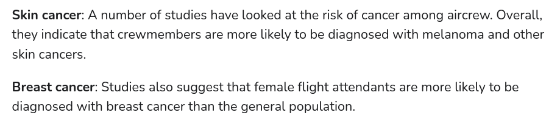
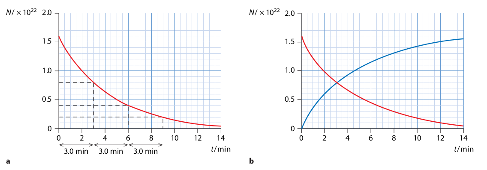
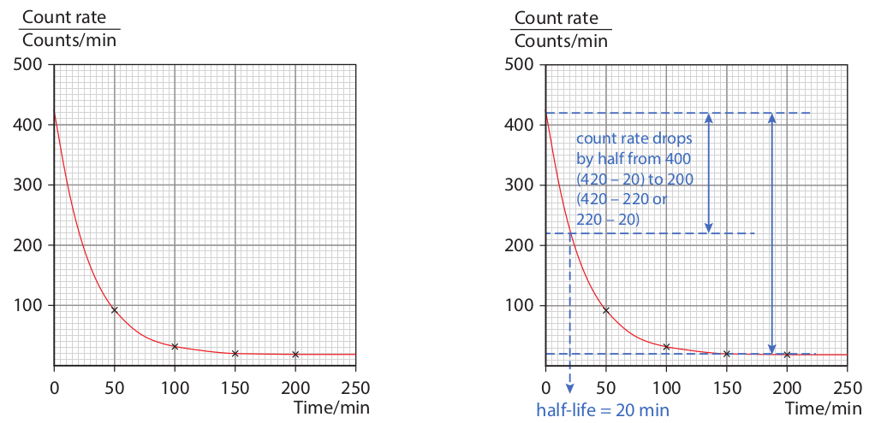

### 10.4, 10.5: Radioactive Decay
**$\alpha$-particles**
* They cause intense ionisation in a gas due to frequent collisions with gas molecules.
* These have a range in air of only a few centimetres
* They are stopped by a thick sheet of paper
* Americium (**Am-241**) is a pure $\alpha$-particle source, used in smoke detectors.
* They are all emitted at a speed around $\frac{1}{20}$th of that of light.
### 10.4, 10.5: Radioactive Decay
**$\beta^-$-particles**
* Their ionising power is much less than that of $\alpha$-particles.
* They have a range in air of several metres.
* These are stopped by a few millimetres of aluminium
* Strontium (**Sr-90**) emits $\beta^-$-particles only.
### 10.4, 10.5: Radioactive Decay
**$\gamma$-emissions**
* These are the most penetrating and are stopped only by many centimetres of lead.
* They ionise a gas even less than $\beta^-$-particles and are not deflected by electric and magnetic fields.
* Cobalt (**Co-60**) emits $\gamma$-radiation and $\beta^-$-particles but can be covered with aluminium to provide pure $\gamma$-radiation.
10.4, 10.5: Radioactive Decay
$\alpha$-particles are deflected slightly by an electric field, $\beta$-particles are deflected a lot, and $\gamma$-particles are not deflected at all
10.4, 10.5: Radioactive Decay
These particles are also deflected by a magnetic field in a direction given by Fleming's ________________ hand rule
10.4, 10.5: Radioactive Decay
Identify the radiation emitted in Source 1, Source 2, Source 3
### 10.4, 10.5: Radioactive Decay
* Not all nuclei give out radiation. Some nuclei are unstable and give out radiation in order to become more stable. This process is known as **radioactive decay**.
* Some isotopes are unstable because the nucleus is too heavy. Other isotopes are unstable because they have too many neutrons.
> When the Earth formed, about 4500 million years ago, there were many more radioactive atoms around. This means that the level of background radiation used to be much higher than it is today. However, most radioactive atoms have decayed to become stable.
### 10.4, 10.5: Radioactive Decay
* An $\alpha$-particle is a helium nucleus, a particle having only two protons and two neutrons
* When an atom decays by emission of an $\alpha$-particle, its nucleon number decreases by 4 and its proton number by 2.
* For example, when radium $^{226}\_{88}\text{Ra}$ emits an $\alpha$-particle, it decays to radon $^{222}\_{86}\text{Rn}$
* $^{226}\_{88}\text{Ra} \to ^{222}\_{86}\text{Rn} + ^{4}\_{2}\alpha$
### 10.4, 10.5: Radioactive Decay
##### Examples of alpha decay
* $^{226}_{88}\text{Ra} \to ^{222}\_{86}\text{Rn*} + ^{4}\_{2}\alpha$
* $^{238}_{92}\text{U} \to ^{234}\_{90}\text{Th} + ^{4}\_{2}\alpha$
* $^{212}_{84}\text{Po} \to ^{208}\_{82}\text{Pb} + ^{4}\_{2}\alpha$
### 10.4, 10.5: Radioactive Decay
The equation for alpha decay is
> $^{A}_{Z}\text{X} \to ^{A-4}\_{Z-2}\text{Y} + ^{4}\_{2}\alpha$
* The values of A and Z must balance on both sides of the equation
* In $\alpha$-decay the number of nucleons in the nucleus is reduced and a heavy nucleus becomes lighter, tending to increase its stability.
### 10.4, 10.5: Radioactive Decay
* In $\beta^-$-decay a neutron changes to a proton and an electron.
* $\text{neutron} \to \text{proton} + \text{electron}$
* The proton remains in the nucleus and the electron is emitted as a $\beta^-$-particle.
* For example, carbon $^{14}\_{6}\text{C}$ decays by $\beta^-$-emission to nitrogen
* $^{14}\_{6}\text{C} \to ^{14}\_{7}\text{N} + ^{0}\_{-1}\text{e}$
* This is the decay that is used in radiocarbon dating. A carbon-14 nucleus decays
to become a nitrogen-14 nucleus.
* In $\beta^-$-decay a neutron turns into a proton and an electron so that the number of neutrons in the nucleus decreases; this increases the stability of a nucleus that has an excess of neutrons.
### 10.4, 10.5: Radioactive Decay
##### Examples of beta decay
* $^{14}\_{6}\text{C} \to ^{14}\_{7}\text{N} + ^{0}\_{-1}\text{e}$
* $^{234}\_{90}\text{Th} \to ^{234}\_{91}\text{Pa} + ^{0}\_{-1}\text{e}$
* $^{214}\_{82}\text{Pb} \to ^{214}\_{83}\text{Bi*} + ^{0}\_{-1}\text{e}$
* $^{40}\_{19}\text{K} \to ^{40}\_{20}\text{Ca} + ^{0}\_{-1}\text{e}$
### 10.4, 10.5: Radioactive Decay
The equation for beta decay is
> $^{A}_{Z}\text{X} \to ^{A}\_{Z+1}\text{Y} + ^{0}\_{-1}\text{e} + \text{an antineutrino}$
* In $\beta^-$-decay a neutron turns into a proton and an electron so that the number of neutrons in the nucleus decreases
* This increases the stability of a nucleus that has an excess of neutrons.
### 10.4, 10.5: Radioactive Decay
* After a nucleus emits an $\alpha$ or a $\beta$ particle, the nucleus may have excess energy.
* It releases this excess energy by emitting $\gamma$-rays.
* For example, when the lead nuclide $^{214}_{82}\text{Pb}$ decays, the resulting bismuth is left with excess energy.
* This excess energy is released as $\gamma$-emission.
* $^{214}\_{82}\text{Pb} \to ^{214}\_{83}\text{Bi*} + ^{0}\_{-1}\text{e}$
* $^{214}\_{83}\text{Bi*} \to ^{214}\_{83}\text{Bi} + \gamma$
### 10.4, 10.5: Radioactive Decay
**Examples of $\gamma$ decay**
* $^{214}\_{82}\text{Pb} \to ^{214}\_{83}\text{Bi} + ^{0}\_{-1}\text{e} + \gamma$
* $^{226}_{88}\text{Ra} \to ^{222}\_{86}\text{Rn} + ^{4}\_{2}\alpha + \gamma$
There are some rare artificial isotopes that emit only $\gamma$-rays, like the unstable **technetium-99m** (the m means 'metastable')
* $^{99m}\_{43}\text{Tc} \to ^{99}\_{43}\text{Tc}$
### 10.4, 10.5: Radioactive Decay
The equation for gamma decay is
> $^{A}_{Z}\text{X*} \to ^{A}\_{Z}\text{X} + \gamma$
* In $\gamma$ emission, the nuclide releases excess energy
* No change in atomic number or mass number
10.4, 10.5: Radioactive Decay
10.4, 10.5: Radioactive Decay
10.4, 10.5: Radioactive Decay
10.4, 10.5: Radioactive Decay

10.4, 10.5: Radioactive Decay
### 10.4, 10.5: Radioactive Decay
* Radioactive decay is a **random process** and **spontaneous**
* It is **random** because we cannot predict which nucleii will decay or when a decay will happen
* It is **spontaneous** because we cannot affect the rate of decay by changing temperature, pressure, etc.
* Since radioactivity is a random process you cannot predict when an unstable atom will decay.
* However, given a large number of atoms of the same kind, you can estimate when most of the atoms will decay.
### 10.4, 10.5: Radioactive Decay
* We cannot predict or influence when a particular nucleus will decay
* The **law of radioactive decay** states that the rate of decay is proportional to the number of nuclei that have not yet decayed
> $$ \frac{\Delta N}{\Delta t} \propto N$$
> where $N$ is the number of undecayed nuclei
### 10.4, 10.5: Radioactive Decay
We cannot easily measure how many unstable nuclei are present in a sample, but we can detect the decays.
Consider the beta minus decay of thallium into lead:
$$^{208}\_{81}\text{Tl} \to ^{208}\_{82}\text{Pb} + ^{0}\_{-1}\text{e} + ^{0}\_{0}\overline{\nu}$$
* Initially consider there are $1.6 \times 10^{22}$ nuclei of thallium (about $6\\;g$)
* After 3 minutes, we find there are $0.8 \times 10^{22}$ nuclei of thallium.
* After another 3 minutes, we find there are $0.4 \times 10^{22}$ nuclei of thallium.
* After another 3 minutes, we find there are $0.2 \times 10^{22}$ nuclei of thallium.
10.4, 10.5: Radioactive Decay

The blue line in the graph on the right represents the amount of lead in the sample
10.4, 10.5: Radioactive Decay
10.4, 10.5: Radioactive Decay
The radioactive activity of a source decreases with time.
As nuclei decay and become stable, there are fewer unstable nuclei, so there are fewer decays each second.
### 10.4, 10.5: Radioactive Decay
* The graph shows that the amount of a radioactive substance decreases rapidly at first, and then more and more slowly.
* The graph tails off more and more slowly which shows us *we cannot say when the last atoms will decay*.
* So we have to think of another way of describing the rate of decay. To do this, we identify the **half-life** of the substance.
> The **half-life** of a radioactive isotope is the average time taken for half of the atoms in a sample to decay
The average number of nuclei decaying per second is called the **activity**. This is measured in the SI Unit **Becquerel**.
### 10.4, 10.5: Radioactive Decay
* Half-lives can vary from a fraction of a second to thousands of years.
* Uranium decays slowly because it has a very long half-life (4.5 billion years)
* Carbon-14 has a half life of 5700 years.
* For radium, it is 1600 years.
* Some radioactive substances have half-lives that are less than a microsecond.
* After one half-life, half of the atoms in a radioactive sample have decayed.
* *This does not mean that all of the atoms will have decayed after two half-lives.*
10.4, 10.5: Radioactive Decay

10.4, 10.5: Radioactive Decay
10.8: Using Radioactivity
Tracers
The diagnosis of some diseases may be carried out using a source of $\gamma$-radiation.
The patient is injected with a radioactive chemical and a scanner is used to trace the path of the chemical.
### 10.8: Using Radioactivity
##### Tracers
* The progress of a small amount of a weak radioisotope injected into a body can be traced by a GM tube
* The method is used in medicine to detect brain tumours and internal bleeding.
* A tracer should be a source of *beta radiation* or *gamma radiation*
* This is so it is not blocked by the skin and does not cause radiation damage
* A tracer should be chosen whose *half-life is short*
* An isotope is chosen if its half-life matches the time needed for the experiment so it will not pose a radiation threat.
* It should also be *non-toxic* since it will be injected in the blood.
### 10.8: Using Radioactivity
##### Tracers
**Examples of tracers:**
* **technetium-99** is the most widely used tracer. It emits pure gamma radiation, its half life is around 6 hours, and it is non-toxic.
* **Gallium-68:** emits beta radiation and has a half-life of 68 minutes and is non-toxic.
* **Flourine-18:** emits beta radiation and has a half-life of 110 minutes. It helps us observe the brain, heart, thyroid glands and bones.
* **Rubidium-82:** acts similar to potassium in the body. So it is used to trace the movement of potassium. It has a half-life of only 1 minute but the patient will experience high radiation levels for that time.
10.8: Using Radioactivity
Tracers
10.8: Using Radioactivity
Tracers
10.8: Using Radioactivity
Radiation Therapy
It is increasingly common to receive radiation as part of a treatment for cancer.
In External Beam Therapy, source of ionizing radiation is directed at the tumour that needs to be destroyed.
### 10.8: Using Radioactivity
##### Radiation Therapy
* *$\gamma$-radiation* is chosen because of its high penetrating power and its ionization is low enough to be controlled.
* The gamma source moves around the patient aiming at the tumour from different directions.
* This is so other tissues receive only a small dose of radiation.
* Radiation therapy is often combined with chemotherapy
10.8: Using Radioactivity
Smoke Alarm
A smoke alarm consists of a battery, an alarm device and two ionisation chambers which are identical, except for one being open to the air and the other closed.
Each chamber contains two electrodes with a p.d. applied across them from the battery.
### 10.8: Using Radioactivity
##### Smoke Alarm
* A small radioactive source, usually *americium-241*, in each chamber emits $\alpha$-particles
* these alpha particles ionize the air molecules of the air molecules
* the air ions move towards the electrodes and a current flows
* Since conditions are the same in both chambers, the small current produced in each is the same.
* When smoke enters the chamber open to the air, the motion of ions is disturbed when they adhere to smoke particles.
* The current falls and the difference from the unchanged current in the closed chamber is detected electronically and the alarm is activated.
10.8: Using Radioactivity
Smoke Alarm
$\alpha$-particles are chosen because they do not
travel far in air so do not pose a health risk
a source with a long half-life is preferred so that a constant activity is maintained.
The Americium source used in smoke detectors has a long half-life – about 430 years.